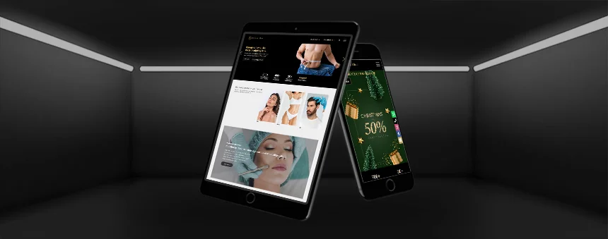

Craft a visual brand identity that breaks the clutter, signifies luxury, strikes a chord with the discerning high net worth audience, lays foundation for the digital future, and competes with unstructured brands in the highly unorganised ‘aesthetic cosmetology’ market, besides competing with brands in the larger ‘beauty space’.
The solution to the problem was far more complex than the client brief that said, “we need a bling like logo that spells out luxury”. While the client looked at creating ‘logo’, we saw the need to build a “brand”. Given that we were aware that the client, a new-age start-up in the space, was launching a plush, ultra-luxurious clinic, with the best of global technology – we had to go beyond the brief and build a scientifically designed identity manual.
Once we took over, we approached the problem in a step-by-step manner, defining a personality that reflected a physique built on ‘understated luxury’, a culture that would be built on excellence, world-class technology, innovation & expertise to build a relationship with the audience based on trustworthiness, credibility, dependability & reputation of the brand. Finally, leaning inwards our research indicated we stood the best chance of building a lasting bond with our audience that believed in being self-confident, lifestyle-oriented, with a zest for life and all things beautiful.
With the foundation stones set on solid research, that established the brand image, its identity & personality, there were two critical aspects remaining;
The journey to establish the visual identity kickstarted with an insignia design that brings together the classic yet modern personality of the brand, reflecting its unwavering commitment to time-honoured principles of holistic wellness, while also showcasing its dynamic and progressive spirit that embraces inventive and new-age treatment methods.
Eterne’s core philosophy embraces the notion that beauty is timeless, eternal, and thriving on a continuous transformation & growth. It posits that when individuals feel their finest, in tune with their inner, most authentic self they exude confidence of the highest order. .
In recent years, the aesthetic industry, long viewed as predominantly female-centric, has seen a significant uptick in male clientele. To embrace this shift, we consciously chose a colour palette that transcends traditional gender associations, aiming to appeal to a broader and more diverse clientele.
The logo's rich black background and radiant gold motif communicate luxury and sophistication and is symbolic of a vast realm of possibility. The circular gold emblem is reminiscent of a solar eclipse, a powerful metaphor for transformation and new beginnings. This visual identity strongly aligns with the clinic's positioning as a modern, luxury aesthetic cosmetology haven, where clients receive top-tier treatments in the hearth of exceptional care and hospitality.
This perfectly resonates with the clinic’s target audience - a discerning individual who values and seeks out exclusivity in their beauty treatments, which the brand embodies.
The brand’s essence is neatly woven into the tagline "A New You," encapsulating the clinic's service ethos. The logo’s typeface further narrates the brand's dual nature; the serif font articulates a legacy of professionalism and grace, while the sans-serif tagline infuses a dash of modernity.
Éterne Clinic's use of cosmic imagery and the encompassing golden circle suggests a nurturing, holistic environment that welcomes clients into a transformative journey. It speaks of a personal, enlightening experience that the clinic aims to build with each individual.
In its entirety, The Éterne Clinic's brand identity is a tapestry that intertwines the threads of luxury, transformation, and timeless beauty. Through its visual and linguistic elements, it stands as an emblem of elegance in the aesthetic cosmetology realm, extending beyond mere marketing to embody the brand's soul and its commitment to their clients’ journey towards lasting beauty.
The journey began with a vision, to carve out a niche where luxury melded seamlessly with aesthetics & clinical expertise. The Éterne Clinic was not just to be a clinic; it was to be a serene haven for those seeking gold-standard cosmetic-dermatological treatments to rejuvenate in privacy with…., an ultimate expression of excellence, care and expertise.
At its core, The Éterne Clinic was inspired by the idea that like the stars, beauty is fervently radiant, eternal and timeless. It evolves…
The logo, the clinic's insignia, became the beacon of this ethos. Set against a canvas of rich black, it spoke of the vast expanse of possibility, the depth of individual journeys to self-discovery. The radiant gold motif that crowned the design was not merely a colour but a promise of the radiant transformation awaiting Éterne's clientele.

"The Éterne Clinic," emblazoned in a serif font, was a nod to tradition and a pledge of professionalism. The serifs whispered tales of sophistication, while the tagline "A NEW YOU" broke the silence in a sans-serif voice, bold and modern, heralding the metamorphosis that beckoned.
The golden circle, an echo of a solar eclipse, became the seal of transformation. It was a symbol of the cycles of beauty, the endless dance of renewal and rebirth. This emblem, charged with the clinic's tagline "Discover A New You," was not just an image but an invitation to a journey of rejuvenation.
This halo of gold was a harbinger of purity, enlightenment, and healing. It was the aura of The Éterne Clinic, a halo of hope for those who sought transformation.
Centralised within this golden aura, the text gives the onlooker a glimpse into a world of harmony and wholeness. It was a world where each person was the architect of their beauty, guided by the skilled hands of Éterne's doctors and therapists.
The Éterne Clinic’s logo stands as a testament to its philosophy. It was a symphony of symmetry and order, an artistic confluence of the cosmic dance and human desire for change.
The global aesthetic industry is a booming market estimated to be worth $15.5 billion